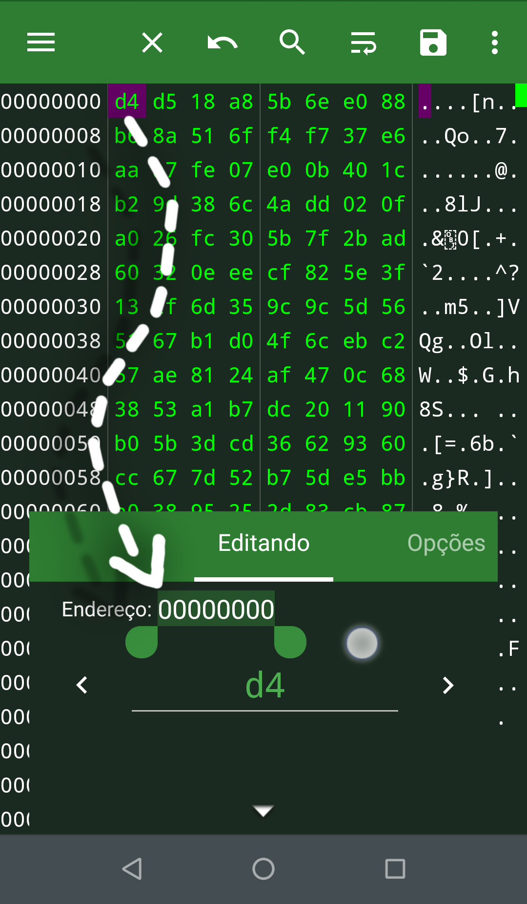
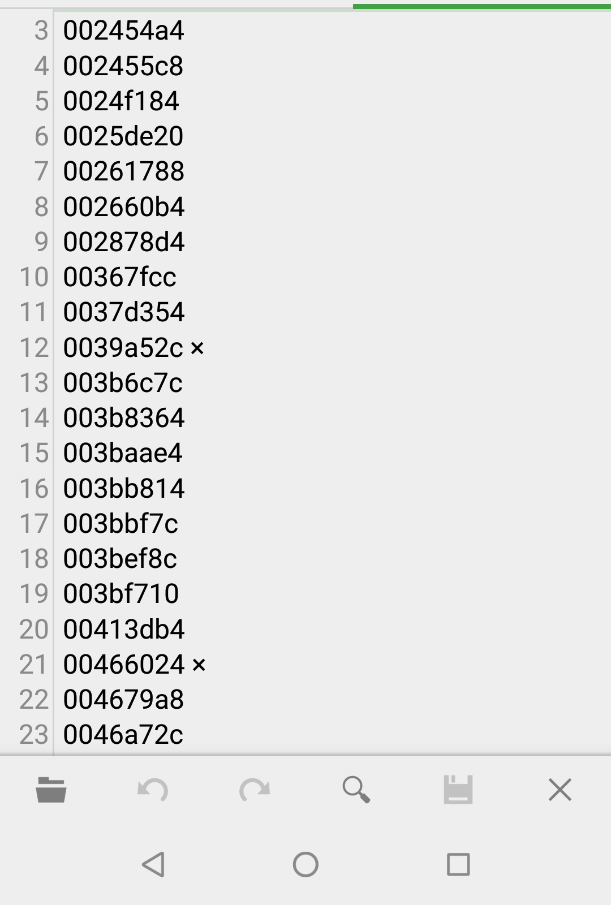
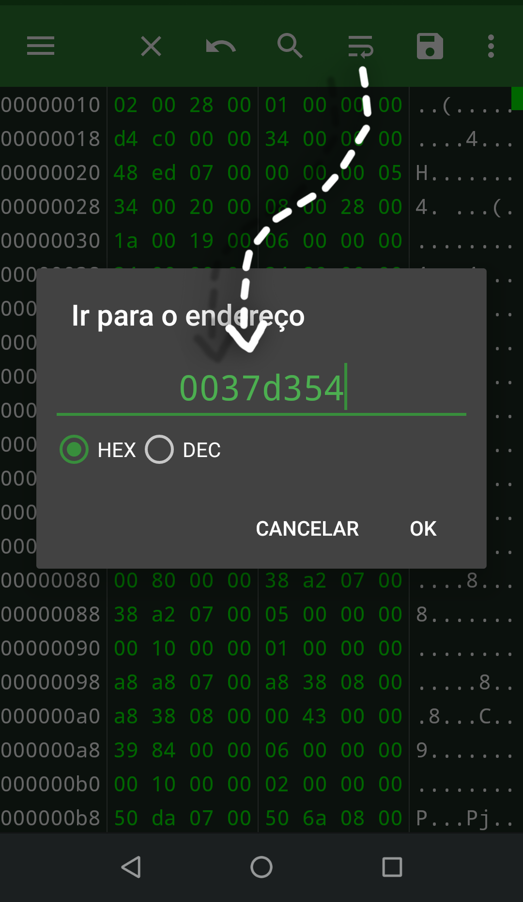

ENDEREÇO
Endereços apontam a localização dos bytes não quer dizer que seja um endereço real.
O endereço pode nos ajudar a localizar valores que editamos, que precisamos corregir em caso de bugs e colapso. Observe!
DEMONSTRAÇÃO:
O primeiro passo é copiar o endereço antes de modificar os bytes e, em seguida, colá-lo em um arquivo usado como arquivo de rascunho para que, se o arquivo for corrompido, você possa usá-lo para corrigir o problema.

Aqui está uma lista de todos os endereços do mesmo byte para que, se houver um colapso ou bugs, possam ser corrigidos. Os endereços marcados com "×" significam que causam problemas e precisam ser corrigidos.

Caso precise fazer alguma correção, basta colar na barra de endereços.
